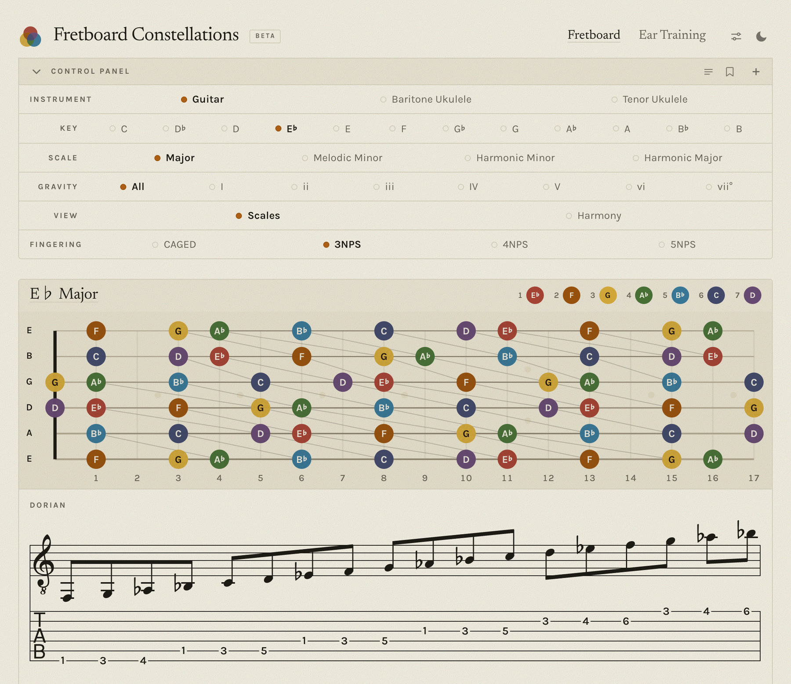
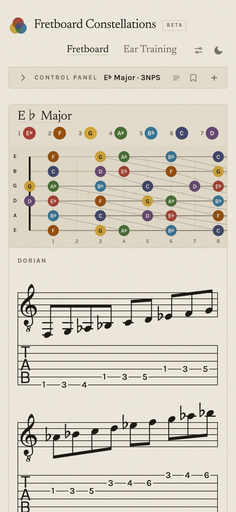
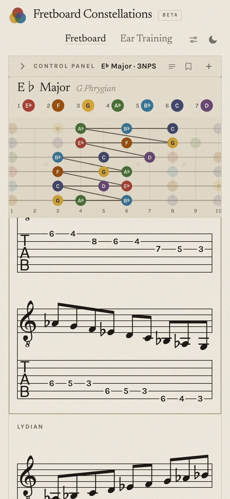
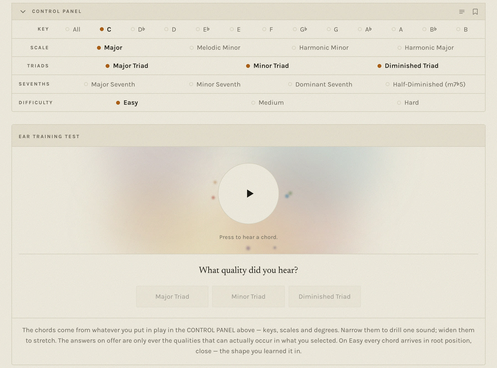
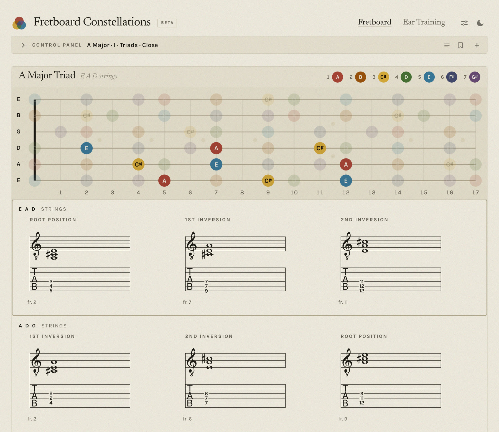

No. 01 Case study · 2026
Fretboard Constellations
A theory instrument for the guitar lesson: every note of a key lit across the neck, and re-lit the moment the key changes.
In short
- The problem
- Theory books are static. A live lesson needs one that moves with it: any pattern, in any key, without flipping pages or transposing by hand.
- My role
- I designed it and set every musical rule; Claude Code wrote the code. 82 of its 226 commits record a call or correction of mine.
- The defining decision
- Light every note of the key across the whole neck, instead of one box shape at a time. In one lesson, a student stuck in scale boxes went from running the scale to listening for what fit.
- The outcome
- Shipped on 1 September 2026, and in my lessons with four students since late August. No usage numbers yet: it has only gone out to a few guitar communities.

Overview
A theory tool built by the teacher who needed it
Fretboard Constellations shows music theory on the guitar neck. Each scale degree has its own colour. Scales, chords and inversions appear in every position, with notation and TAB, and all of it plays. Behind a switch sits a lead-sheet workbench that names what every chord in a progression is doing.
I've taught music for fifteen years. I designed the screens and ruled on the fingerings; Claude Code wrote the TypeScript. It's my first app built with Claude Code to ship: 226 commits between 15 June and 19 October 2026.
The thread through my work is a tool for someone in the middle of something, built to get out of their way. Here that someone is me, mid-lesson. Scroll to the music and the controls fold to one line, while the neck stays pinned.


01 · The problem
Theory books hold still. A lesson doesn't.
A lesson moves. A student brings a song in an awkward key, or a chord we haven't covered, and the material has to follow. Books and handouts are drawn in one key, so I would stop teaching to transpose.
I said it plainly to JA in August: “In the past… you have to write out, like, 12 sets of these for every key.” In July, mid-lesson, I lost my place working out a chord pair: “This is why we need the app. Chord pair, give me all the inversions.”
I'd had the idea since 2016, along with an ear-training quiz. In 2020 I started designing the visuals in Figma, page by page, as handouts. A handout still has to be redrawn for every key.
02 · Constraints
Thirty days of commits, a token limit, and code a small model could maintain
I had a light coding background and design skills, but never the time for a project this size. Claude Code made fast prototyping possible, and I iterated with it from there — “pretty much running through my tokens always.”
It took 11 weeks from first commit to v1, with commits on 24 of those days and almost none from mid-July to late August. The brief on day one called me a “novice coder” and set a rule: the code “must be maintainable later by a small local AI model.” Boring, conventional, heavily commented, small files.
That rule shaped the architecture. Theory is data, not code: a scale, chord, tuning or instrument is a data file the engine reads. There's no backend; it's a static site.
The ear-training quiz — the other half of the 2016 idea — reads the same data. It only asks about chords that can occur in the keys and scales you've put in play. Honestly, I've barely used it in lessons yet.

03 · The insight
The name came out of a lesson, six days before the code
On 9 June I was transcribing Quincy Jones with SF. I said a player almost has to “see the fretboard lit up as like a little constellation” of the notes in the key. Two candidate keys might show as “your red color and… your blue color.”
SF answered: “I haven't developed that relationship with the fretboard yet…” That's the person the app is for, saying what's missing. The first commit was six days later.
The brief's first line was “a living textbook.” I wanted the screen to do what a sheet of paper used to, then hand the guitar back.
04 · The decision
Light the whole key, not one box
Guitarists usually learn scales as box shapes, one hand position at a time. The app offers those — CAGED, and three, four or five notes per string. But it opens on every note of the key, everywhere on the neck, and the boxes are a scroll away. I gave up the familiar starting point to get the whole map.
The evidence came on 30 August. JJ-B improvised in E♭ with every note lit: “It feels good. Just being able to just take a look here and… see what different intervals sound like together.” I heard him going for far more variety.
Twenty minutes later he described the change himself. He'd started “just going through the scale.” Now he was “starting to hear… what you're playing,” and looking for “something that kind of meshes with that.” By October he was explaining target notes back to me.
“I don't think I've ever seen, like, a chart with, like, you know, the colors, and then, like… the intervals right there.”
— JJ-B, guitar student, comparing it to guitar books
05 · What didn't work
Too much at once, and not yet self-explanatory
Showing a chord on every string set at once overwhelmed RV: “The plot last week was overwhelming, it was like, I bit off more than I could actually…” I cut it to one string set a week, and sent him that one box as a screenshot.

The screen still needs me to explain it. SF had to ask “How do you see the degree?” — although the colour key was already on the neck. Later he asked “What do the lines in the fretboard mean?” From the first demo, the open question was the flow: why you'd reach for it, and when. It still is.
The data rule leaked, too. The brief said never hard-code six strings. When ukulele arrived on 1 September, two hidden six-string assumptions broke it: TAB height, and scale boxes that asked for two octaves. Both were fixed that day. The theory layer took the new instrument as pure data.
06 · Outcome
Four students, one breakthrough on record, no numbers yet
It shipped on 1 September as an installable web app. Since late August I've used it in lessons with four students. SF was first: he saw it the day after the first commit, asked me to send it, and offered to be the beta tester. His heat-map idea went into the backlog three days later and shipped in two weeks.
JA worked through inversions on screen. On 24 September he realised the C chord he plays most is an inversion. By 15 October: “I'm gonna actually do some more diving in it myself.” RV asks for screenshots, so he can print them.
What isn't known is how many people use it. There's no analytics. An email sign-up shipped, and I've sent it to a few guitar communities. I won't claim adoption it doesn't have.
07 · Reflection
The next feature is a lock
My students mostly got screenshots and PDFs, not the app. That was partly my hesitation to share it before it was ready, and before I was committed to it. I wouldn't change that.
What I'd add is a focused exercise for one student, locked to one setting, so they practise instead of clicking around. Half of it exists: a link that opens the app in an exact setting. The lock doesn't.
This is how I'd work with AI on a team. The model writes the code; I bring the rules it can't know, and check them against the instrument. One correction is in the log verbatim: “It is clearly not that fingering for the 5 Shapes on E phrygian.” I'm not always right either. I once read a line-drawing bug as wrong notes, and a check of 71,540 shapes proved me wrong.